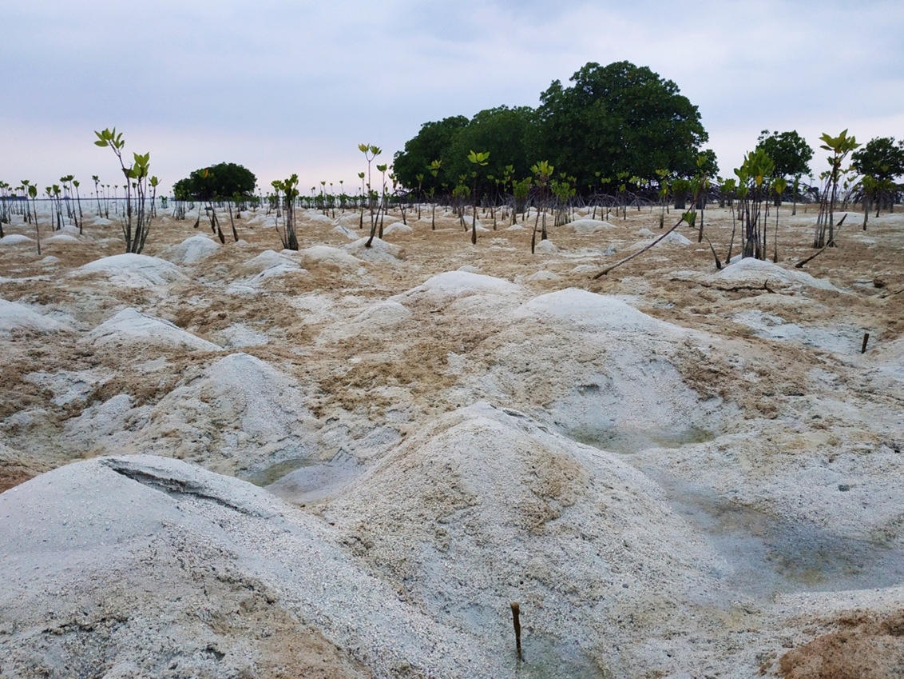

Ekosistem Pesisir
Ekosistem adalah komunitas besar yang melibatkan interaksi antara organisme hidup (tanaman, hewan, mikroba) dan komponen tak hidup (batuan, air, dll.) di area tertentu. Komponen hidup (biotik) dan tak hidup (abiotik) saling terhubung melalui siklus nutrisi dan aliran energi. Ekosistem terbagi menjadi dua kategori besar: terestrial (berbasis darat) dan akuatik (berbasis air). Jenis utama ekosistem termasuk hutan, padang rumput, gurun, tundra, air tawar, dan laut.

Istilah "bioma" digunakan untuk menggambarkan ekosistem terestrial yang luas, seperti tundra. Ekosistem bervariasi secara spesifik di berbagai lokasi geografis, misalnya, ekosistem laut di Laut Banda berbeda dengan ekosistem di Laut Jawa atau Teluk Lampung.
Ekosistem akuatik dibagi menjadi ekosistem air tawar dan ekosistem laut. Ekosistem air tawar terdapat di sungai, mata air, kolam, danau, dan rawa air tawar, dan terdiri dari kelas air yang hampir tidak bergerak (seperti kolam) dan air yang mengalir (seperti sungai). Ekosistem air tawar menjadi habitat bagi ganggang, plankton, serangga, amfibi, ikan air tawar, dan tanaman bawah air.
Ekosistem laut mengandung garam sehingga airnya asin, dan mencakup dasar laut, permukaan, zona pasang surut, muara, rawa-rawa garam, bakau, dan terumbu karang. Ekosistem ini memiliki biodiversitas yang sangat tinggi. Berikut adalah beberapa contoh ekosistem pesisir: